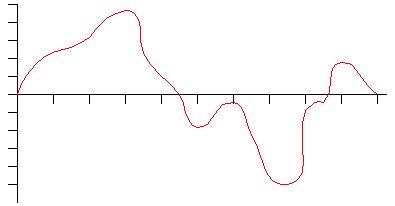
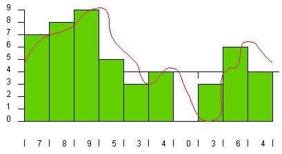
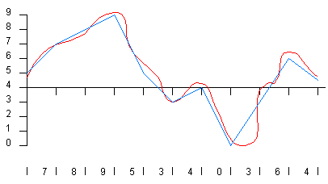
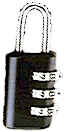
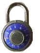

Introducción
Introducción
|
|
|
Ejemplo representación digital
Limitaciones sistemas digitales
|
|
Es cualquier sistema que genera, procesa, transmite y almacena información, siendo esta representada por magnitudes físicas discretas.
Para entender mejor este
concepto consideremos que en la ciencia, tecnología, negocios
y en muchisimos otros campos estamos constantemente manejando
cantidades. Las cantidades son medidas, monitoreadas grabadas,
manipuladas aritméticamente, observadas, o de alguna otra
manera utilizadas en la mayoría de los sistemas físicos.
Es importante, cuando tratamos con diferentes cantidades que seamos
capaces de representar sus valores con precisión y de manera
eficiente.
Existen dos formas de representar el valor numérico de las cantidades: La forma ANALOGICA y la forma DIGITAL
|
|
En la representación analógica una cantidad es representa por un voltaje, corriente, o el movimiento de un metro que es proporcional al valor de la cantidad. Las cantidades analógicas como las enumeradas anteriormente poseen una característica importante: varían sobre un rango de valores continuos.
|
|
En la representación digital las cantidades no se representan por cantidades proporcionales sino por símbolos llamados dígitos.
Como ejemplo podemos mencionar el reloj digital, el cual representa las horas, los minutos y los segundos en forma de dígitos decimales. Como sabemos el tiempo cambia continuamente, en cambio el reloj digital cambia por pasos de uno por segundo (o por de minuto). En otras palabras, esta representación digital del transcurrir del tiempo cambia en pasos discretos.
Podemos concluir que la diferencia principal entre las cantidades representadas de forma analógica y las representadas en forma digital es que las primeras son continuas y las segundas son discretas ( paso a paso)
Ejemplo representación digital
Los CD son una muestra de como funciona el "mundo digital". La música en la forma original es analógica. Para grabar un CD se debe convertir la señal analógica en una señal digital. La señal mecánica, que básicamente es un desplazamiento de aire, se recoge por un micrófono que la convierte en una señal eléctrica con la misma forma que la señal mecánica. Luego se debe codificar la señal analógica eléctrica para convertirla a digital.
|
 |
Señal mecánica: Es analógica. Es el sonido original que vamos a grabar. Señal eléctrica: Es el sonido recogido por un micrófono (transductor) convertido a voltaje que tiene la misma forma que la señal mecánica. |
|
 |
Luego viene
un proceso de muestro para convertir la señal analógica
a digital. Esto se hace con dos variables, el tiempo de muestreo
(cada cuanto tiempo se toma una muestra de la señal
original) y los niveles de cuantización (en cuantos nivele
se divide el rango de la señal original. |
|
 |
Señal Digital: Es el resultado de darle un código a cada nivel. La señal en azul es la conversión a señal digital de la señal analógica original en rojo. |
|
|
Fácil de diseñar . No son importantes valores exactos de voltaje o de corriente, solo el rango en el que están (HIGH(ALTO) o LOW(BAJO)).
Facilidad para el almacenamiento de información
Mayor apreciación y precisión
La operación puede ser programada. Los sistemas analógicos también pueden programarse, pero la variedad y complejidad de las operaciones es limitada.
Son mas inmunes al ruido
|
|
Solo hay una desventaja cuando se utilizan técnicas digitales: El mundo real es analógico
Las cantidades físicas son por naturaleza analógicas, y son estas magnitudes las entradas y salidas que son monitoreadas, operadas y controladas por un sistema.
Para tomar ventaja de las
técnicas digitales cuando tratamos con entradas y salidas
analógicas debemos seguir tres pasos:
Convertir las entradas analógicas del mundo real a la forma digital
Procesar la información digital
Convertir las salidas digitales de nuevo a la forma analógica del mundo real.
|
|
Aquel en el cual el valor actual de las salidas está determinado por el valor actual de las entradas
|
|
Aquel en el cual el valor actual de las salidas depende no solo del valor actual de las entradas, sino también de los estados previos.
Para entender mejor la diferencia entre los sistemas combinatorios y secuenciales veamos el siguiente ejemplo:
Considérese los dos tipos de candados:
La salida será la condición del candado ( cerrado o abierto). Las entradas son las posiciones de la combinación
|
Candado de combinación |
Candado de disco |
||
|
 |
Este tipo de candado se abrirá cada vez que se ajusten los tres números correctos y no importa el orden en que estos números se ajustaron. En otras palabras, en un momento determinado, la condición abierto o cerrado del candado dependerá del valor de la combinación en ese momento. Si la combinación es la correcta el candado abrirá, si no estará cerrado. |
 |
Para este tipo de candado la condición abierto o cerrado depende no solo de la posición actual del control, sino también de la forma como se haya manipulado anteriormente. Si los números se colocaron en el orden adecuado el candado se abrirá. En caso contrario el candado estará cerrado. |
|
|
|||
|
Copyright © 2003 Steel E. V. George |